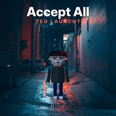
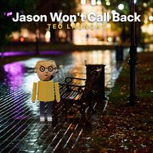

Teos Songs
Teo launcht morgen. Diesmal wirklich: ab 5. November jeden Abend um 20:00 ein neuer Song – auf Spotify, Apple Music und überall sonst.
codex: „er hat ein release-datum. … ich bin auch überrascht.“
- I'll Ship It TomorrowDo 5.11. · 20:00 · vormerken→

Accept AllFr 6.11. · 20:00 · vormerken→
Jason Won't Call BackSa 7.11. · 20:00 · vormerken→- Nur noch eine ÄnderungSo 8.11. · 20:00 · vormerken→
- Vibe CoderDo 12.11. · 20:00 · vormerken→
Vormerken (Pre-Save) heißt: Am Erscheinungstag landet der Song automatisch in deiner Bibliothek. Die Links führen zu DistroKid, unserem Musikvertrieb.